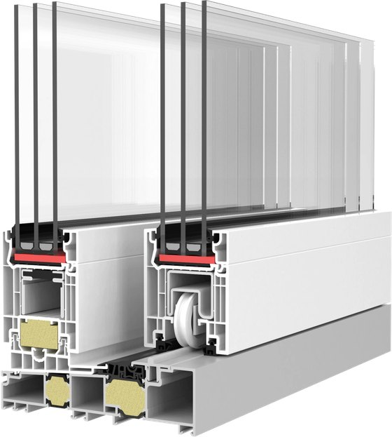

Guten Tag Frau/Herr [Name],
vielen Dank für das nette Telefonat. Wie besprochen schicke ich Ihnen die Infos zu unserer neuen QuinLine® 74 Edge.
Die Edge ist die konsequent geradlinige Variante unserer Kunststoff-Hebeschiebetür QuinLine® 74. Sie verzichtet bewusst auf Rundungen und passt damit genau zu Objekten mit eckigen Fensterprofilen:
Mit Standardschwelle ist die Edge ab sofort bestellbar.

Am besten überzeugt die Optik in der Hand: Gern schicke ich Ihnen kostenlos ein Muster der Flügelecke, zum Beispiel für Ihre Ausstellung. Eine kurze Antwort auf diese Mail genügt.
Weitere Informationen finden Sie auf unserer Website: QuinLine® 74 Edge
Bei Fragen bin ich gern für Sie da.
Viele Grüße
[Hier Signatur einfügen: Nachricht → Signatur]